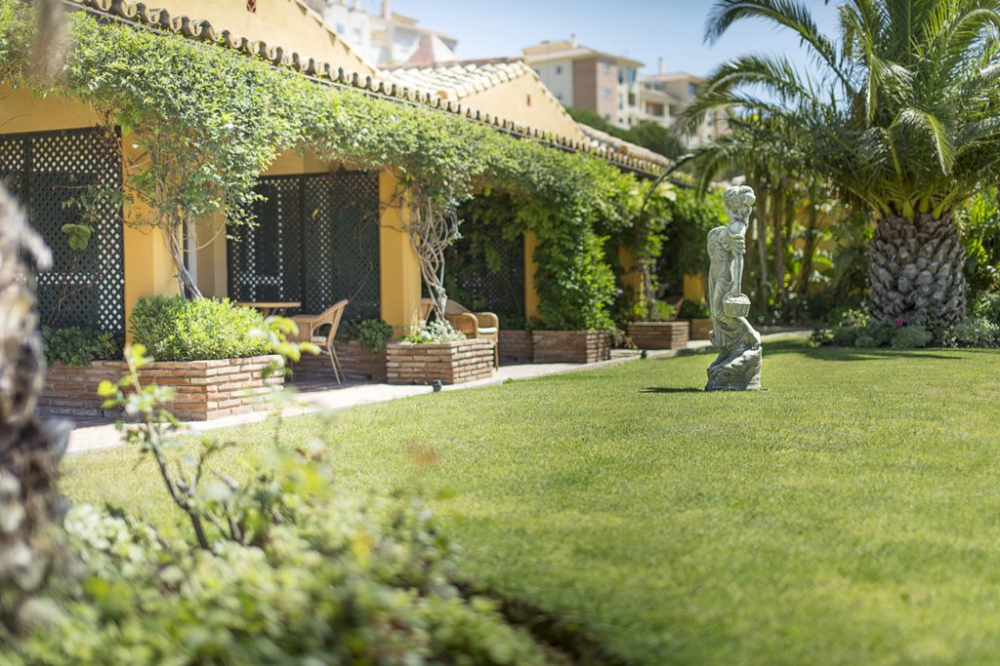

<section class="relative w-full h-screen overflow-hidden">
  <!-- Imagen de fondo -->
  

  <!-- Filtro de oscuridad (capa semitransparente) -->
  <div class="absolute inset-0 bg-black opacity-50 z-1"></div>

  <!-- Contenido con texto dinámico centrado tanto vertical como horizontal -->
  <div class="relative z-10 flex items-center justify-center w-full h-full text-center px-4">
    <h1 class="text-white text-4xl sm:text-6xl font-bold">{{ texto }}</h1> <!-- Texto dinámico -->
  </div>
</section>
